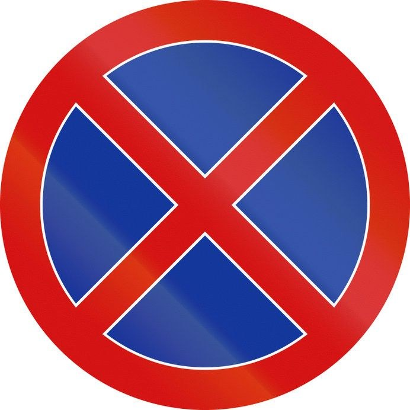
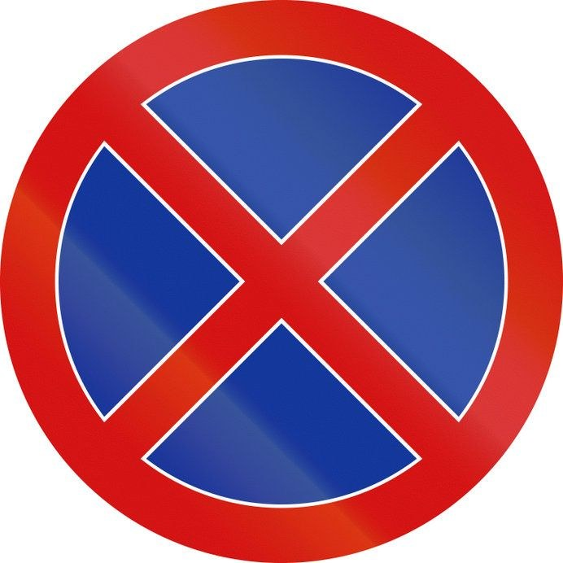
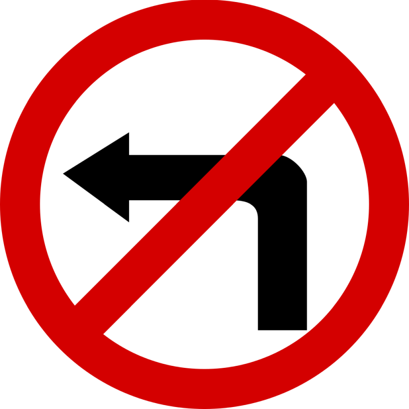
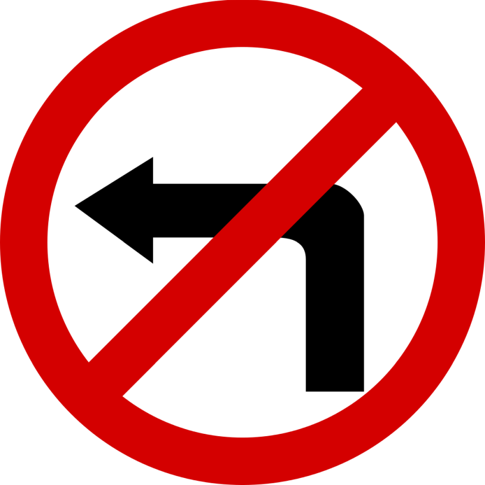
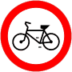
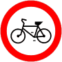

 



 

Zabrania skręcania w lewo oraz zabrania zawracania. Zakaz wyrażony znakiem B-21 obowiązuje na najbliższym skrzyżowaniu. Znak B-21 znajdujący się w obrębie skrzyżowania dotyczy tylko najbliższej jezdni, przed którą został umieszczony. Umieszczona pod znakiem B-21 tabliczka T-22 wskazuje, że znak nie dotyczy rowerów jednośladowych skręcających na drogę dla rowerów lub wyznaczony na jezdni pas ruchu przeznaczony dla tych pojazdów.